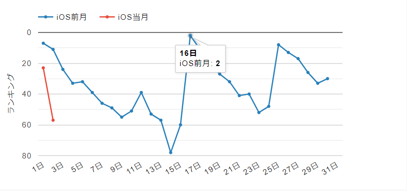
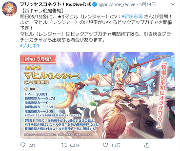
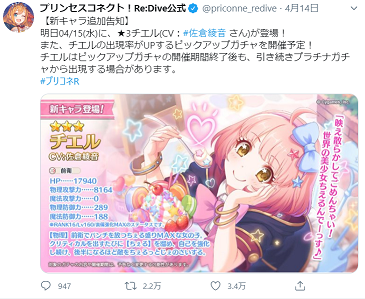
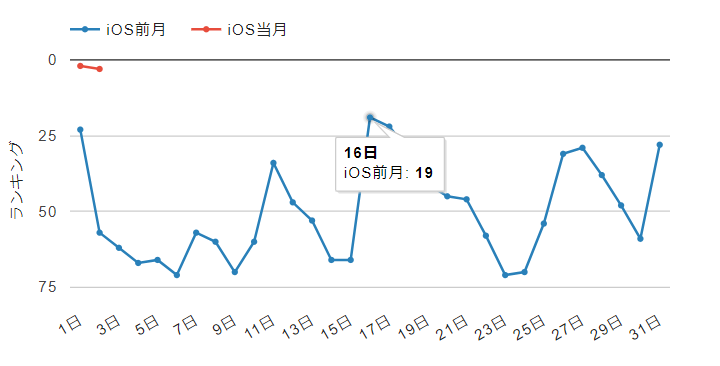
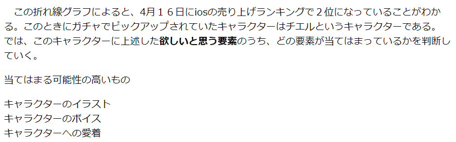

何を研究するかなかなか決まらないなか、とりあえず『コロナのような疫病は過去にも存在するので、現在と過去の疫病による影響を比較して、今後に起こることを予想できるようにする。』というテーマを立てて、過去にあった疫病について調べ始めた。
前回の研究テーマにあまり興味がないことに少し引っかかる部分がありました。
ある日コロナが原因でマスクの需要が急増したという点から、物の価値というものが変化することには何かしらの理由があるが、どのような条件がそろえば良いのかという点はわからなかった。
なので、『物が欲しくなるのは何かしらの価値があるからである。では、一人の人がAというものを欲しいと思っているが、Bというものはあまり欲しいと思わないという状況を仮定した場合、Bにどんな要素を追加あるいは削除すれば欲しくなるのかを明らかにしたい。』というテーマを立てた。
このテーマをもとに類似する論文を読んでいこうと思う。
ゲームにあるガチャも人が欲しいという気持ちで引くものであることから、自分の研究テーマに類似するのではないかと思いました。
なので、今回は僕自身も遊んでいるプリコネReというゲームを主な例として進めていきたいと思う。
このプリコネReというゲームでは近日、マヒルというキャラクターが出ることが予想されています。（現在確定していない）また、このキャラクターはあまり人気のあるキャラではないため、個人的にあまりガチャが回されないと予想しています。
ソーシャルゲームにおいて売り上げに大きく影響するのはプレイヤーによる課金であり、その課金の多くはガチャに使われることが多い。では、このキャラクターのガチャが回るため（売上を上げるため）にはどのような工夫をすればいいかを考えてみる。
ガチャが回るということは、そのキャラクターを欲しいと思う要素があるからである。すなわち、その要素を付け足すことが上述した工夫につながると予想できる。
欲しいと思う要素になりそうなもの及び理由
キャラクターの性能 性能の高いキャラクターを入手しておくことで、ゲームの進行や攻略をしやすくなるから。次に、先月の売り上げを見ていく。
参照ページ（2020年5月6日） この折れ線グラフによると、4月１６日にiosの売り上げランキングで２位になっていることがわかる。このときにガチャでピックアップされていたキャラクターはチエルというキャラクターである。
では、このキャラクターに上述した欲しいと思う要素のうち、どの要素が当てはまっているかを判断していく。
当てはまる可能性の高いもの
キャラクターのイラスト本日ようやくキャラクターのガチャが実装されました。期間は15日～31日までなので、売り上げ結果が出るのはそれ以降になる。
ガチャの売り上げ結果が出る前にこのゲームの公式ツイッターがあげている、このキャラクターのツイートと他のキャラクターを比べてみたいと思う。
5月20日現在、この二つを比べると、右のキャラクターの方が興味関心を引いていることがわかる。
また、それぞれのキャラクターの性能評価はそれぞれ以下のようになっている。
この評価によると、今回ガチャ実装された左のキャラの方が現状の性能は高い場面が多い。
先日、このキャラのガチャが終了し、売り上げ結果が出ていたので見ていく。
参照ページ（2020年6月2日）このグラフによると、比較対象にしたキャラには及ばなかったが、5月の売り上げの中では比較的高いことがわかる。
しかし、ここで注目してほしいのはこのグラフの5月1日のものである。
売り上げのグラフだけ見ると、ほとんど差はないが、このガチャ期間中、このゲームでは無料10連期間というものを7日間行っているため、その分売り上げの差が無くなっていると予想される。
ちなみに、5月1日のガチャのキャラはそこまで人気のあるキャラではないうえに、活躍するコンテンツもマヒルと同じ場所であるため、キャラ人気と性能においてはあまり差はない。（無料10連がなければいいデータだったのでは？）
また、今まで例に挙げてきたのは期間限定ではないキャラのもののみだったので、限定キャラの例も挙げておく。
先ほどのグラフの赤いグラフを見てみる。このときガチャに出ているキャラは、過去の公式主催の人気キャラランキングで1位を取ったことのあるキャラであり、性能に関してもトップクラスになりつつあるキャラである。
つまり、この売り上げ結果（二位）は人気と性能を兼ね備えた限定キャラをガチャにしたからできたものである。しかし、言い方を変えると、このキャラは必要と思われる要素のほとんどを兼ね備えているキャラであるため、あまり比較対象にならない気がする。
今回主に例に挙げてきたキャラのガチャが終了したので、ここで一区切りつけたいと思う。
今回調べてここに書いているときにとても思ったのはどうしても根拠が曖昧になってしまうということでした。
例えばこれです↓ 
これは、私が0506のときに書いたものであるが、説得力のあるデータがネット上にあまりなく、どうしても可能性の領域を超えられなかったため、このような書き方になってしまった。このような結果を今後防ぐにはどうすればいいかを考えたところ、アンケートをとるのが一つの方法だと思いました。